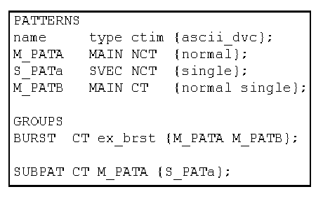

Structure of the GROUPS Statements
The GROUPS section is optional. It consists of the keyword GROUPS, followed by of zero or more group entries. There are four types of groups. Two of these concern multi-port setups and will be explained in The MULTI_PORT_BURST Statement and The MULTI_PORT_TIMING Statement. The other two define the members of single port bursts and the subpatterns (type SVEC) that are called directly from one MAIN pattern, respectively. The format of these latter two statements is as follows:
(SUBPAT|BURST) (CT|NCT) <name> {<patterns>};
The following list explains the components of this statement:
- (SUBPAT|BURST): This component defines the type of the group.
A SUBPAT group specifies the subpatterns (type SVEC) that are called from a given MAIN pattern. The MAIN pattern and the subpatterns of a SUBPAT group must all belong to the same port. Note that nesting of subpattern calls is currently not supported; all the subpatterns of a SUBPAT group must be called directly from the MAIN pattern.
A BURST group specifies the MAIN patterns that are to be called within a burst. This statement will be transferred to the vector configuration file and will be used by the vector translation to create the burst pattern in the vector setup file.
- (CT|NCT): This attribute determines whether timing set changes are
allowed (CT) or not allowed (NCT) within the
group. This line is not copied into the vector configuration file; but the information it
contains is integrated into the pattern configuration (*.vbc) files for the individual patterns
of the group.
If timing set changes are not allowed, all group elements must be set to NCT in the PATTERNS section; only one timing set is created for all patterns of the group, and if the group elements have different ASCII periods, the common test system cycle length will be calculated as described under ctim in The Input Columns.
If timing set changes are allowed within the group then different group elements may be associated with different timing sets even if all the group elements are set to NCT in the PATTERNS section. In this case, CTIM instructions must be inserted between the respective group elements, where "between" means before the first vector of the following pattern, or immediately before or after a subpattern call.
The principles according to which such group specific CTIM instructions are inserted depend on the group type.
If a BURST group is set to CT, the default CTIM instruction is inserted before the first vector of every group element, even if the respective group element is associated with the same timing set as the previous element. If the BURST group is set to NCT, it does not contain any CTIM instruction at all.
With a SUBPAT group, the insertion of group specific CTIM instructions is more complex. A CTIM instruction is placed at the start of its MAIN pattern even if the group is set to NCT, and the implementation of CTIM insertions also depends on the ctim parameter of the MAIN pattern. The following table shows which effects the accepted combinations have on the vector translation:
Timing Set Changes
Effects
SUBPAT Group
MAIN pattern
NCT
NCT
- CTIM is inserted into the MAIN pattern before the first line of the ASCII vector table instead of the default position before the first vector (by adding INITIAL_CTIM in the pattern configuration file (*.vbc)). This takes care of an ASCII vector table starting with a subpattern call(JSUB).
- The default insertion of CTIM before the first vector is suppressed for all subpatterns of the group (by specifying the v2b option -T for them in the vector configuration file (*.aiv)).
CT
CT
- CTIM is inserted before the first vector into all patterns of the group except those subpatterns that also occur in a SUBPAT group with NCT.
- CTIM is inserted into the MAIN pattern after every JSUB instruction (by adding the v2b option -t to theMAIN pattern in the vector configuration file (*.aiv)).
- If required, CTIM is inserted into the MAIN pattern before calling those subpatterns of the group that also occur in a SUBPAT group withNCT (by adding CTIM_BEFORE_JSUB for these subpatterns in the pattern configuration file (*.vbc) of the MAIN pattern).
CT
NCT
- CTIM is inserted into the MAIN pattern before the first line of the ASCII vector table instead of the default position before the first vector (by adding INITIAL_CTIM in the pattern configuration file (*.vbc)). This takes care of an ASCII vector table starting with a subpattern call(JSUB).
- CTIM is inserted before the first vector in all subpatterns of the group except those that also occur in a SUBPAT group with NCT.
- If required, CTIM is inserted into the MAIN pattern after calling a subpattern of the group (by adding CTIM_AFTER_JSUB for these subpatterns in the pattern configuration file (*.vbc) of the MAIN pattern).
- If required, CTIM is inserted into the MAIN pattern before calling a subpattern of the group that also occurs in a SUBPAT group with NCT (by adding CTIM_BEFORE_JSUB for this subpattern in the pattern configuration file (*.vbc) of the MAIN pattern).
For more details and an example, see Controlling the Automatic Insertion of CTIM Instructions.
- <name>: For the SUBPAT group type, this must be the name of a MAIN pattern that is defined in the PATTERNS section. For the BURST group type, it is the name of the burst pattern, which can be freely defined within the restrictions for pattern names (up to 128 alpha-numeric characters).
- {<patterns>}: This component specifies the patterns that belong to the group; the names must be separated by blanks. These patterns must be defined in the PATTERNS section with the appropriate type, SVEC for a SUBPAT group, and MAIN for a BURST group.
It is possible to incorporate a SUBPAT group into a BURST group. In this case, if the BURST group is set to NCT, the SUBPAT group must also be set to NCT.
The following figure shows a global configuration file with a SUBPAT group that is included in a BURST group.
